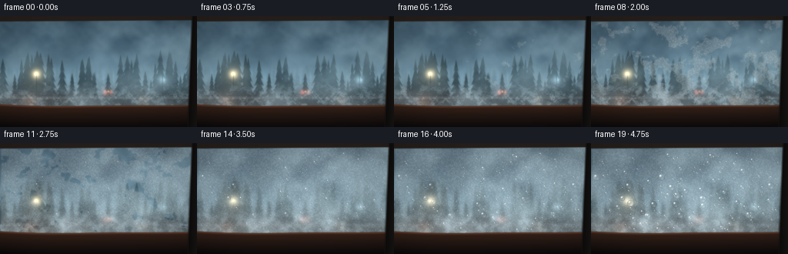
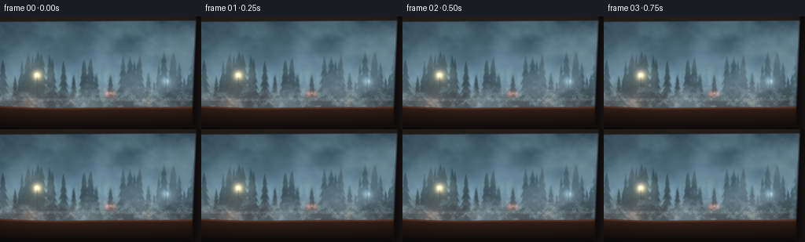
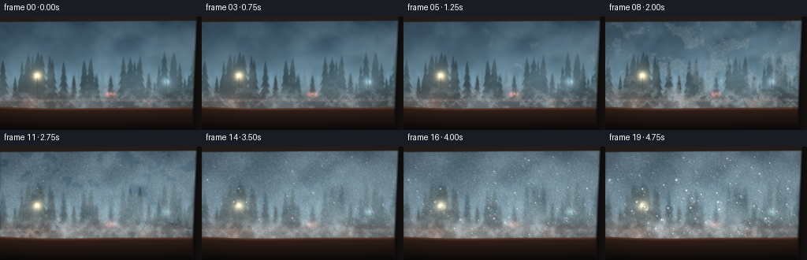
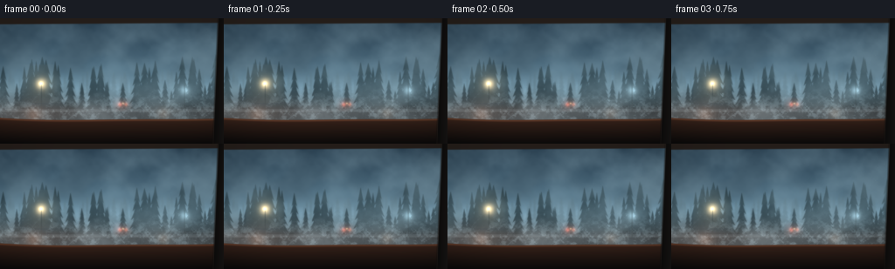
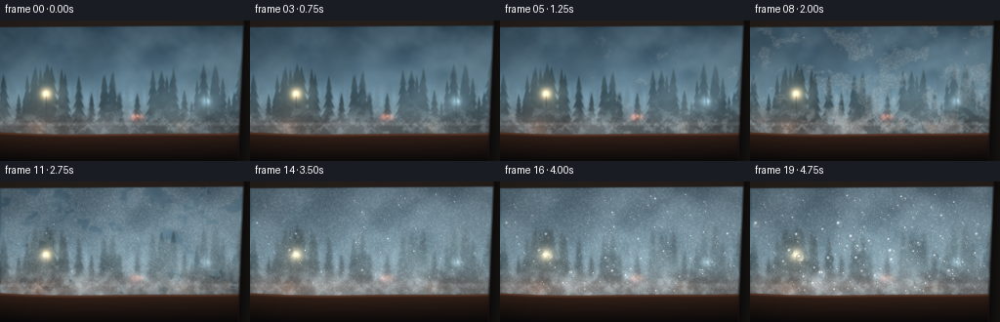
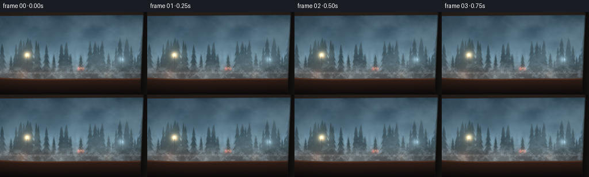

CODING AGENTS AS PIXEL WORLD MODELS
traex/DeepSeek-V4.1-Flash · phygen_102
点击播放 · 原生 RGB 像素
逐轮保存的候选
回放视频、检查图与代码变化。
每份候选均可单独播放。实际图片检查记录在下方工具轨迹中。
候选 01播放与检查图
点击播放 · 原生 RGB 像素


展开代码变化
--- 上一保存版本
+++ 本次保存版本
@@ -0,0 +1,418 @@
+from __future__ import annotations
+
+from pathlib import Path
+
+import cv2
+import numpy as np
+from PIL import Image, ImageDraw
+from scipy.ndimage import gaussian_filter
+
+import artifact_io
+
+
+ROOT = Path(__file__).resolve().parent
+W, H = 1024, 576
+OUT_W, OUT_H = 256, 144
+FRAMES = 20
+FPS = 4.0
+
+
+def smoothstep(edge0: float, edge1: float, value: np.ndarray | float):
+ x = np.clip((value - edge0) / (edge1 - edge0), 0.0, 1.0)
+ return x * x * (3.0 - 2.0 * x)
+
+
+def normalize(field: np.ndarray) -> np.ndarray:
+ low, high = np.percentile(field, (0.5, 99.5))
+ return np.clip((field - low) / max(high - low, 1e-6), 0.0, 1.0)
+
+
+def make_noise(seed: int, scales=(170, 62, 24, 8), weights=(0.48, 0.29, 0.17, 0.06),
+ height: int = H, width: int = W + 260) -> np.ndarray:
+ rng = np.random.default_rng(seed)
+ out = np.zeros((height, width), dtype=np.float32)
+ for scale, weight in zip(scales, weights):
+ coarse_h = max(4, int(np.ceil(height / scale)) + 3)
+ coarse_w = max(4, int(np.ceil(width / scale)) + 3)
+ coarse = rng.random((coarse_h, coarse_w), dtype=np.float32)
+ layer = cv2.resize(coarse, (width, height), interpolation=cv2.INTER_CUBIC)
+ out += weight * normalize(layer)
+ return normalize(out)
+
+
+def scrolled(texture: np.ndarray, x: float, y: float = 0.0) -> np.ndarray:
+ max_x = texture.shape[1] - W
+ max_y = texture.shape[0] - H
+ x0 = int(np.clip(round(x), 0, max_x))
+ y0 = int(np.clip(round(y), 0, max_y))
+ return texture[y0:y0 + H, x0:x0 + W]
+
+
+def add_glow(image: np.ndarray, cx: float, cy: float, radius: float,
+ color, strength: float) -> None:
+ x0 = max(0, int(cx - radius * 2.6))
+ x1 = min(W, int(cx + radius * 2.6))
+ y0 = max(0, int(cy - radius * 2.6))
+ y1 = min(H, int(cy + radius * 2.6))
+ if x0 >= x1 or y0 >= y1:
+ return
+ yy, xx = np.mgrid[y0:y1, x0:x1]
+ dist2 = ((xx - cx) ** 2 + (yy - cy) ** 2) / (radius * radius)
+ glow = np.exp(-dist2 * 1.8) + 0.24 * np.exp(-dist2 * 0.23)
+ image[y0:y1, x0:x1] += np.asarray(color, np.float32) * (glow[..., None] * strength)
+
+
+def tree_mask(seed: int, base_y: float, count: int, min_h: float, max_h: float,
+ width_scale: float = 1.0) -> np.ndarray:
+ rng = np.random.default_rng(seed)
+ mask = Image.new("L", (W, H), 0)
+ draw = ImageDraw.Draw(mask)
+ for _ in range(count):
+ cx = rng.uniform(-30, W + 30)
+ height = rng.uniform(min_h, max_h)
+ half = height * rng.uniform(0.12, 0.22) * width_scale
+ bottom = base_y + rng.uniform(-15, 24)
+ top = bottom - height
+ trunk_w = max(1.0, half * 0.08)
+ draw.rectangle((cx - trunk_w, top + height * 0.64, cx + trunk_w, bottom + 12), fill=255)
+ tiers = 5
+ for tier in range(tiers):
+ f = tier / max(1, tiers - 1)
+ tier_y = top + height * (0.03 + 0.74 * f)
+ tier_half = half * (0.34 + 0.74 * f)
+ tier_h = height * 0.24
+ points = [
+ (cx, tier_y - tier_h * 0.25),
+ (cx - tier_half, tier_y + tier_h),
+ (cx - tier_half * 0.45, tier_y + tier_h * 0.75),
+ (cx - tier_half * 0.68, tier_y + tier_h * 1.06),
+ (cx, tier_y + tier_h * 0.62),
+ (cx + tier_half * 0.68, tier_y + tier_h * 1.06),
+ (cx + tier_half * 0.45, tier_y + tier_h * 0.75),
+ (cx + tier_half, tier_y + tier_h),
+ ]
+ draw.polygon(points, fill=255)
+ return np.asarray(mask, dtype=np.float32) / 255.0
+
+
+def build_background() -> np.ndarray:
+ yy, xx = np.mgrid[0:H, 0:W].astype(np.float32)
+ yn = yy / (H - 1)
+ xn = xx / (W - 1)
+
+ top = np.array([27, 44, 57], np.float32)
+ middle = np.array([89, 115, 126], np.float32)
+ horizon = np.array([158, 174, 174], np.float32)
+ low = np.array([53, 66, 69], np.float32)
+ t = np.clip(yn / 0.61, 0.0, 1.0)[..., None]
+ image = top * (1.0 - t) + middle * t
+ lower_t = smoothstep(0.53, 0.77, yn)[..., None]
+ image = image * (1.0 - lower_t) + low * lower_t
+ image += horizon * np.exp(-((yn - 0.58) / 0.09) ** 2)[..., None] * 0.22
+
+ # A low band of cloud gives the sky depth even through the fog.
+ cloud = make_noise(91, scales=(180, 75, 30), weights=(0.65, 0.27, 0.08))
+ cloud = scrolled(cloud, 70, 8)
+ cloud_band = np.exp(-((yn - 0.34) / 0.24) ** 2) * smoothstep(0.28, 0.72, cloud)
+ image = image * (1.0 - 0.18 * cloud_band[..., None])
+ image += np.array([134, 148, 151], np.float32) * (0.12 * cloud_band[..., None])
+
+ # Layered conifers recede into blue-grey mist.
+ far_trees = tree_mask(23, int(H * 0.625), 74, 50, 135, 0.92)
+ far_trees = gaussian_filter(far_trees, 2.8)
+ far_color = np.array([74, 91, 95], np.float32)
+ image = image * (1.0 - far_trees[..., None] * 0.42) + far_color * far_trees[..., None] * 0.42
+
+ mid_trees = tree_mask(44, int(H * 0.735), 54, 95, 250, 1.05)
+ mid_trees = gaussian_filter(mid_trees, 1.05)
+ mid_color = np.array([29, 43, 47], np.float32)
+ image = image * (1.0 - mid_trees[..., None] * 0.82) + mid_color * mid_trees[..., None] * 0.82
+
+ # The road is only glimpsed above the dashboard.
+ road_mask = smoothstep(0.68, 0.74, yn) * (1.0 - smoothstep(0.78, 0.88, yn))
+ road_mask *= 0.76
+ road_color = np.array([45, 54, 57], np.float32)
+ road_color = road_color * (0.8 + 0.16 * np.exp(-((xn - 0.5) / 0.18) ** 2))[..., None]
+ image = image * (1.0 - road_mask[..., None]) + road_color * road_mask[..., None]
+ image += np.array([145, 153, 151], np.float32) * (
+ np.exp(-((yn - 0.731) / 0.005) ** 2) * 0.18)[..., None]
+
+ # A few cold, half-dissolved lights make the exterior legible through haze.
+ add_glow(image, W * 0.185, H * 0.522, 34, (226, 157, 83), 0.72)
+ add_glow(image, W * 0.183, H * 0.520, 10, (255, 219, 154), 0.65)
+ add_glow(image, W * 0.825, H * 0.574, 27, (182, 207, 210), 0.52)
+ add_glow(image, W * 0.536, H * 0.687, 13, (229, 73, 45), 0.58)
+ add_glow(image, W * 0.563, H * 0.686, 11, (241, 92, 53), 0.46)
+ add_glow(image, W * 0.550, H * 0.678, 4, (255, 194, 112), 0.5)
+
+ # Lamp posts and the faint guard rail anchor the scene.
+ rail_y = int(H * 0.742)
+ rail_alpha = 0.34 * np.exp(-((yy - rail_y) / 2.0) ** 2)
+ image = image * (1.0 - rail_alpha[..., None]) + np.array([148, 158, 157], np.float32) * rail_alpha[..., None]
+ for px in (0.185, 0.825):
+ x0 = int(px * W)
+ strip = np.exp(-((xx - x0) / 2.1) ** 2) * smoothstep(0.49, 0.56, yn) * (1.0 - smoothstep(0.74, 0.78, yn))
+ image = image * (1.0 - 0.55 * strip[..., None]) + np.array([35, 45, 46], np.float32) * 0.55 * strip[..., None]
+
+ image = gaussian_filter(image, sigma=(1.6, 1.6, 0))
+ return image.astype(np.float32)
+
+
+def make_window_mask() -> np.ndarray:
+ yy, xx = np.mgrid[0:H, 0:W].astype(np.float32)
+ xn = xx / (W - 1)
+ yn = yy / (H - 1)
+ mask = np.ones((H, W), dtype=np.float32)
+
+ top_edge = 0.035 + 0.012 * (1.0 - xn) + 0.003 * np.sin(xn * np.pi * 2.1)
+ mask *= smoothstep(top_edge - 0.006, top_edge + 0.006, yn)
+
+ dash_edge = 0.792 + 0.018 * (1.0 - (2.0 * xn - 1.0) ** 2) + 0.005 * np.sin(xn * np.pi * 2.4 + 0.3)
+ mask *= 1.0 - smoothstep(dash_edge - 0.008, dash_edge + 0.008, yn)
+
+ pillar_edge = 0.949 + 0.023 * (1.0 - yn) + 0.004 * np.sin(yn * 7.0)
+ mask *= 1.0 - smoothstep(pillar_edge - 0.006, pillar_edge + 0.006, xn)
+ mask *= smoothstep(0.002, 0.009, xn)
+ return gaussian_filter(mask, 1.5)
+
+
+def draw_trails(image: np.ndarray, clear_image: np.ndarray, frame_index: int,
+ rng: np.random.Generator) -> list[tuple[float, float, float]]:
+ t = frame_index / (FRAMES - 1)
+ if t < 0.32:
+ return []
+ trails = [
+ (0.225, 0.10, 0.78, 0.40),
+ (0.435, 0.08, 0.84, 0.52),
+ (0.665, 0.12, 0.76, 0.61),
+ (0.820, 0.07, 0.70, 0.72),
+ ]
+ heads = []
+ overlay = Image.new("L", (W, H), 0)
+ draw = ImageDraw.Draw(overlay)
+ for idx, (x0, y0, y1, start) in enumerate(trails):
+ local_t = np.clip((t - start) / max(0.01, 0.98 - start), 0.0, 1.0)
+ if local_t <= 0:
+ continue
+ end_y = y0 + (y1 - y0) * local_t
+ phase = idx * 1.7 + rng.uniform(-0.2, 0.2)
+ pts = []
+ for yy in np.linspace(y0, end_y, 48):
+ xx = x0 + 0.006 * np.sin(yy * 37.0 + phase) + 0.0025 * np.sin(yy * 93.0 + phase * 0.7)
+ pts.append((xx * W, yy * H))
+ if len(pts) > 1:
+ draw.line(pts, fill=255, width=5, joint="curve")
+ heads.append((pts[-1][0], pts[-1][1], 7.5 + 5.0 * local_t))
+ mask = gaussian_filter(np.asarray(overlay, np.float32) / 255.0, 1.2)
+ clear_alpha = 0.30 * mask * smoothstep(0.30, 0.55, t)
+ image *= (1.0 - clear_alpha[..., None])
+ image += clear_image * clear_alpha[..., None]
+ return heads
+
+
+def draw_droplet(image: np.ndarray, cx: float, cy: float, radius: float,
+ opacity: float, rng: np.random.Generator) -> None:
+ if radius < 0.8 or opacity <= 0.01:
+ return
+ pad = int(radius * 2.5 + 4)
+ x0, x1 = max(0, int(cx) - pad), min(W, int(cx) + pad + 1)
+ y0, y1 = max(0, int(cy) - pad), min(H, int(cy) + pad + 1)
+ if x0 >= x1 or y0 >= y1:
+ return
+ yy, xx = np.mgrid[y0:y1, x0:x1].astype(np.float32)
+ dx = xx - cx
+ dy = yy - cy
+ dist = np.sqrt(dx * dx + dy * dy)
+ core = 1.0 - smoothstep(radius * 0.87, radius, dist)
+ if not np.any(core > 0):
+ return
+
+ sx = np.clip((cx - dx * 0.22).astype(np.int32), 0, W - 1)
+ sy = np.clip((cy - dy * 0.17).astype(np.int32), 0, H - 1)
+ refracted = image[sy, sx]
+ luminance = refracted.mean(axis=2, keepdims=True)
+ droplet = refracted * 0.90 + luminance * 0.07 + 4.0
+ droplet = droplet * (0.97 + 0.08 * (dist / max(radius, 1.0))[..., None])
+
+ rim = np.exp(-((dist - radius * 0.91) / max(1.1, radius * 0.105)) ** 2)
+ droplet *= (1.0 - 0.15 * rim[..., None])
+ hx = cx - radius * 0.34
+ hy = cy - radius * 0.38
+ highlight = np.exp(-(((xx - hx) ** 2 + (yy - hy) ** 2) / max(1.0, radius * radius * 0.055)))
+ highlight *= 95.0 + 55.0 * rng.random()
+ droplet += highlight[..., None]
+ lower_glint = np.exp(-(((xx - (cx + radius * 0.22)) ** 2 +
+ (yy - (cy + radius * 0.43)) ** 2) /
+ max(1.0, radius * radius * 0.10)))
+ droplet += lower_glint[..., None] * 26.0
+
+ alpha = core * opacity
+ image[y0:y1, x0:x1] = (
+ image[y0:y1, x0:x1] * (1.0 - alpha[..., None]) +
+ droplet * alpha[..., None]
+ )
+
+
+def render_frame(frame_index: int, scene: np.ndarray, window_mask: np.ndarray,
+ fog_large: np.ndarray, fog_medium: np.ndarray, fog_detail: np.ndarray,
+ cond_noise: np.ndarray, grain: np.ndarray, droplets: np.ndarray) -> np.ndarray:
+ t = frame_index / (FRAMES - 1)
+ ease = t * t * (3.0 - 2.0 * t)
+ rng = np.random.default_rng(3100 + frame_index * 17)
+ yy, xx = np.mgrid[0:H, 0:W].astype(np.float32)
+ xn = xx / (W - 1)
+ yn = yy / (H - 1)
+
+ large = scrolled(fog_large, 42 + frame_index * 6.2, 8 + frame_index * 0.75)
+ medium = scrolled(fog_medium, 12 + frame_index * 12.0, 2 + frame_index * 0.3)
+ detail = scrolled(fog_detail, 6 + frame_index * 18.5, frame_index * 0.8)
+
+ # A bank of fog enters from the right and gradually envelops the view.
+ bank_x = W * (1.08 - 0.43 * ease)
+ bank_y = H * (0.36 + 0.025 * np.sin(ease * 4.8))
+ bank = np.exp(-(((xx - bank_x) / (W * 0.46)) ** 2 +
+ ((yy - bank_y) / (H * 0.34)) ** 2))
+ bank *= 0.45 + 0.55 * normalize(medium)
+
+ density = 0.18 + 0.56 * smoothstep(0.08, 0.96, large) + 0.22 * normalize(medium)
+ density += 0.28 * bank
+ density += 0.10 * np.exp(-((yn - 0.70) / 0.20) ** 2) * normalize(detail)
+ density = np.clip(density * (0.72 + 0.25 * ease), 0.0, 1.08)
+ fog_color = np.array([159, 180, 184], np.float32)
+ outside = scene * (1.0 - 0.66 * density[..., None]) + fog_color * (0.66 * density[..., None])
+
+ # Fog close to the glass has a soft, almost luminous underside.
+ low_fog = np.exp(-((yn - 0.76) / 0.14) ** 2) * smoothstep(0.35, 0.95, detail) * (0.16 + 0.13 * ease)
+ outside += np.array([170, 187, 188], np.float32) * low_fog[..., None]
+
+ # Cool glass tint and warm interior reflections.
+ glass = outside * np.array([0.93, 0.985, 1.035], np.float32)
+ glass += np.array([2.0, 4.0, 5.0], np.float32)
+ dash_glow = np.exp(-((yn - 0.755) / 0.14) ** 2) * (0.50 + 0.14 * np.sin(xn * 5.0 + 0.7))
+ warm = np.array([211, 104, 52], np.float32)
+ glass += warm * (0.13 * dash_glow[..., None])
+ diagonal = np.exp(-((yn - (0.58 - 0.32 * xn)) / 0.055) ** 2) * smoothstep(0.0, 0.7, 1.0 - xn)
+ glass += np.array([96, 111, 112], np.float32) * (0.065 * diagonal[..., None])
+ add_glow(glass, W * 0.15, H * 0.77, 48, (255, 117, 46), 0.10)
+ add_glow(glass, W * 0.73, H * 0.76, 34, (255, 145, 68), 0.07)
+
+ # Condensation arrives as a network of patches, then merges into a film.
+ cond = scrolled(cond_noise, 20 + frame_index * 4.7, 3 + frame_index * 1.1)
+ threshold = 0.15 + 0.72 * normalize(cond) + 0.11 * (1.0 - yn)
+ threshold -= 0.08 * bank
+ growth = 0.08 + 1.12 * ease
+ film = smoothstep(-0.025, 0.11, growth - threshold)
+ film += 0.20 * smoothstep(0.52, 1.0, t) * (0.3 + 0.7 * normalize(detail))
+ film += 0.07 * smoothstep(0.60, 0.98, t)
+ film = np.clip(film, 0.0, 1.0) * window_mask
+
+ blurred = cv2.GaussianBlur(glass, (0, 0), 5.0 + 4.0 * t)
+ blurred_luma = blurred.mean(axis=2, keepdims=True)
+ blurred = blurred * 0.80 + blurred_luma * 0.20
+ milk = blurred * 0.79 + np.array([213, 224, 223], np.float32) * 0.21
+ film_alpha = 0.78 * film
+ glass = glass * (1.0 - film_alpha[..., None]) + milk * film_alpha[..., None]
+
+ # Fine bead texture catches light only where the glass has fogged.
+ micro = normalize(scrolled(grain, frame_index * 9.0, frame_index * 1.5))
+ micro_centered = micro - 0.5
+ glass += micro_centered[..., None] * (film * 13.0)[..., None]
+ glass += np.maximum(micro_centered, 0.0)[..., None] * (film * 17.0)[..., None] * np.array([0.8, 0.95, 1.0])
+
+ # Slow runnels leave clear vertical traces and terminate in bright beads.
+ clear_image = cv2.GaussianBlur(outside, (0, 0), 2.5)
+ trail_heads = draw_trails(glass, clear_image, frame_index, rng)
+ for hx, hy, radius in trail_heads:
+ draw_droplet(glass, hx, hy, radius, 0.86, rng)
+
+ # Individual droplets are revealed gradually, with the larger ones low on the pane.
+ for cx0, cy0, target_r, start, drift, phase in droplets:
+ if t <= start:
+ continue
+ local = np.clip((t - start) / max(0.13, 0.94 - start), 0.0, 1.0)
+ local_ease = local * local * (3.0 - 2.0 * local)
+ radius = target_r * (0.22 + 0.78 * local_ease)
+ cx = cx0 + np.sin(phase + local * 4.2) * target_r * 0.20
+ cy = cy0 + drift * local_ease
+ sample_x = int(np.clip(cx, 0, W - 1))
+ sample_y = int(np.clip(cy, 0, H - 1))
+ local_film = film[sample_y, sample_x]
+ opacity = (0.32 + 0.63 * local_ease) * (0.35 + 0.65 * local_film)
+ draw_droplet(glass, cx, cy, radius, opacity, rng)
+
+ # Dark window surround, warm dashboard, and a narrow A-pillar.
+ dash_edge = 0.792 + 0.018 * (1.0 - (2.0 * xn - 1.0) ** 2) + 0.005 * np.sin(xn * np.pi * 2.4 + 0.3)
+ dash_alpha = smoothstep(dash_edge - 0.004, dash_edge + 0.007, yn)
+ dash_gradient = np.clip((yn - dash_edge) / 0.20, 0.0, 1.0)
+ dash_color = (
+ np.array([55, 35, 27], np.float32)[None, None, :] * (1.0 - dash_gradient[..., None]) +
+ np.array([13, 12, 12], np.float32)[None, None, :] * dash_gradient[..., None]
+ )
+ dash_color += np.array([115, 65, 38], np.float32) * (
+ np.exp(-((yn - dash_edge - 0.008) / 0.008) ** 2)[..., None] * 0.32)
+ glass = glass * (1.0 - dash_alpha[..., None]) + dash_color * dash_alpha[..., None]
+
+ top_edge = 0.035 + 0.012 * (1.0 - xn)
+ top_alpha = 1.0 - smoothstep(top_edge - 0.006, top_edge + 0.007, yn)
+ top_color = np.array([23, 21, 20], np.float32) + np.array([17, 12, 9], np.float32) * (1.0 - yn[..., None])
+ glass = glass * (1.0 - top_alpha[..., None]) + top_color * top_alpha[..., None]
+
+ pillar_edge = 0.949 + 0.023 * (1.0 - yn)
+ pillar_alpha = smoothstep(pillar_edge - 0.004, pillar_edge + 0.009, xn)
+ pillar_gradient = np.clip((xn - pillar_edge) / 0.05, 0.0, 1.0)
+ pillar_color = np.array([25, 23, 22], np.float32) * (0.55 + 0.45 * pillar_gradient[..., None])
+ glass = glass * (1.0 - pillar_alpha[..., None]) + pillar_color * pillar_alpha[..., None]
+ pillar_spec = np.exp(-((xn - pillar_edge - 0.004) / 0.0016) ** 2) * pillar_alpha
+ glass += np.array([126, 106, 92], np.float32) * (0.16 * pillar_spec[..., None])
+
+ # Subtle bloom, vignette, and a final filmic grade.
+ luma = glass.mean(axis=2, keepdims=True)
+ highlights = np.clip(luma - 165.0, 0.0, None) / 90.0
+ bloom = cv2.GaussianBlur(glass * highlights, (0, 0), 10.0)
+ glass += bloom * 0.17
+
+ vignette = 1.0 - 0.26 * ((xn - 0.5) ** 2 * 1.15 + (yn - 0.49) ** 2 * 1.45)
+ glass *= np.clip(vignette, 0.66, 1.0)[..., None]
+ glass = (glass - 6.0) * 1.055 + 4.0
+ glass = np.clip(glass, 0, 255)
+ frame = cv2.resize(glass, (OUT_W, OUT_H), interpolation=cv2.INTER_AREA)
+ frame = np.clip(frame * 1.012, 0, 255).astype(np.uint8)
+ return frame
+
+
+def build_droplets() -> np.ndarray:
+ rng = np.random.default_rng(7081)
+ count = 390
+ x = rng.uniform(0.018, 0.955, count) * W
+ y = (rng.beta(1.55, 1.25, count) * 0.82 + 0.055) * H
+ sizes = np.exp(rng.normal(np.log(5.2), 0.68, count))
+ sizes = np.clip(sizes, 1.4, 19.0)
+ sizes[rng.random(count) < 0.035] *= 1.8
+ sizes = np.clip(sizes, 1.2, 26.0)
+ start = rng.uniform(0.10, 0.86, count)
+ drift = rng.uniform(0.0, 9.0, count) * (sizes / 8.0)
+ phase = rng.uniform(0.0, np.pi * 2.0, count)
+ return np.stack([x, y, sizes, start, drift, phase], axis=1)
+
+
+def main() -> None:
+ scene = build_background()
+ window_mask = make_window_mask()
+ fog_large = make_noise(1002, scales=(210, 96, 44, 18), weights=(0.54, 0.27, 0.14, 0.05))
+ fog_medium = make_noise(1003, scales=(105, 44, 20, 7), weights=(0.43, 0.32, 0.18, 0.07))
+ fog_detail = make_noise(1004, scales=(38, 17, 7, 3), weights=(0.35, 0.33, 0.22, 0.10))
+ cond_noise = make_noise(1005, scales=(92, 36, 14, 5), weights=(0.43, 0.31, 0.18, 0.08))
+ grain = make_noise(1006, scales=(5.5, 2.6, 1.3), weights=(0.50, 0.33, 0.17))
+ droplets = build_droplets()
+
+ frames = np.stack([
+ render_frame(i, scene, window_mask, fog_large, fog_medium, fog_detail,
+ cond_noise, grain, droplets)
+ for i in range(FRAMES)
+ ])
+ artifact_io.save(frames, ROOT)
+ print(f"saved {FRAMES} frames to {ROOT}")
+
+
+if __name__ == "__main__":
+ main()
候选 02播放与检查图
点击播放 · 原生 RGB 像素


展开代码变化
--- 上一保存版本
+++ 本次保存版本
@@ -274,12 +274,12 @@
((yy - bank_y) / (H * 0.34)) ** 2))
bank *= 0.45 + 0.55 * normalize(medium)
- density = 0.18 + 0.56 * smoothstep(0.08, 0.96, large) + 0.22 * normalize(medium)
- density += 0.28 * bank
+ density = 0.14 + 0.50 * smoothstep(0.08, 0.96, large) + 0.18 * normalize(medium)
+ density += 0.24 * bank
density += 0.10 * np.exp(-((yn - 0.70) / 0.20) ** 2) * normalize(detail)
density = np.clip(density * (0.72 + 0.25 * ease), 0.0, 1.08)
fog_color = np.array([159, 180, 184], np.float32)
- outside = scene * (1.0 - 0.66 * density[..., None]) + fog_color * (0.66 * density[..., None])
+ outside = scene * (1.0 - 0.58 * density[..., None]) + fog_color * (0.58 * density[..., None])
# Fog close to the glass has a soft, almost luminous underside.
low_fog = np.exp(-((yn - 0.76) / 0.14) ** 2) * smoothstep(0.35, 0.95, detail) * (0.16 + 0.13 * ease)
@@ -290,7 +290,7 @@
glass += np.array([2.0, 4.0, 5.0], np.float32)
dash_glow = np.exp(-((yn - 0.755) / 0.14) ** 2) * (0.50 + 0.14 * np.sin(xn * 5.0 + 0.7))
warm = np.array([211, 104, 52], np.float32)
- glass += warm * (0.13 * dash_glow[..., None])
+ glass += warm * (0.19 * dash_glow[..., None])
diagonal = np.exp(-((yn - (0.58 - 0.32 * xn)) / 0.055) ** 2) * smoothstep(0.0, 0.7, 1.0 - xn)
glass += np.array([96, 111, 112], np.float32) * (0.065 * diagonal[..., None])
add_glow(glass, W * 0.15, H * 0.77, 48, (255, 117, 46), 0.10)
@@ -306,18 +306,22 @@
film += 0.07 * smoothstep(0.60, 0.98, t)
film = np.clip(film, 0.0, 1.0) * window_mask
- blurred = cv2.GaussianBlur(glass, (0, 0), 5.0 + 4.0 * t)
+ blurred = cv2.GaussianBlur(glass, (0, 0), 4.0 + 3.2 * t)
blurred_luma = blurred.mean(axis=2, keepdims=True)
blurred = blurred * 0.80 + blurred_luma * 0.20
- milk = blurred * 0.79 + np.array([213, 224, 223], np.float32) * 0.21
- film_alpha = 0.78 * film
+ milk = blurred * 0.86 + np.array([213, 224, 223], np.float32) * 0.14
+ film_alpha = 0.73 * film
glass = glass * (1.0 - film_alpha[..., None]) + milk * film_alpha[..., None]
# Fine bead texture catches light only where the glass has fogged.
micro = normalize(scrolled(grain, frame_index * 9.0, frame_index * 1.5))
micro_centered = micro - 0.5
glass += micro_centered[..., None] * (film * 13.0)[..., None]
- glass += np.maximum(micro_centered, 0.0)[..., None] * (film * 17.0)[..., None] * np.array([0.8, 0.95, 1.0])
+ glass += np.maximum(micro_centered, 0.0)[..., None] * (film * 20.0)[..., None] * np.array([0.8, 0.95, 1.0])
+
+ # Warm interior light remains legible through the fogged lower pane.
+ film_glow = np.exp(-((yn - 0.755) / 0.085) ** 2) * (0.25 + 0.75 * np.clip(film, 0.0, 1.0))
+ glass += np.array([142, 60, 28], np.float32) * (0.095 * film_glow[..., None])
# Slow runnels leave clear vertical traces and terminate in bright beads.
clear_image = cv2.GaussianBlur(outside, (0, 0), 2.5)
候选 03播放与检查图
点击播放 · 原生 RGB 像素


展开代码变化
--- 上一保存版本
+++ 本次保存版本
@@ -211,7 +211,7 @@
def draw_droplet(image: np.ndarray, cx: float, cy: float, radius: float,
- opacity: float, rng: np.random.Generator) -> None:
+ opacity: float, rng: np.random.Generator, edge_gain: float = 1.0) -> None:
if radius < 0.8 or opacity <= 0.01:
return
pad = int(radius * 2.5 + 4)
@@ -236,6 +236,8 @@
rim = np.exp(-((dist - radius * 0.91) / max(1.1, radius * 0.105)) ** 2)
droplet *= (1.0 - 0.15 * rim[..., None])
+ outer_rim = np.exp(-((dist - radius * 0.99) / max(0.9, radius * 0.065)) ** 2)
+ droplet += outer_rim[..., None] * (21.0 * edge_gain)
hx = cx - radius * 0.34
hy = cy - radius * 0.38
highlight = np.exp(-(((xx - hx) ** 2 + (yy - hy) ** 2) / max(1.0, radius * radius * 0.055)))
@@ -268,11 +270,13 @@
detail = scrolled(fog_detail, 6 + frame_index * 18.5, frame_index * 0.8)
# A bank of fog enters from the right and gradually envelops the view.
- bank_x = W * (1.08 - 0.43 * ease)
+ bank_x = W * (1.10 - 0.55 * ease)
bank_y = H * (0.36 + 0.025 * np.sin(ease * 4.8))
bank = np.exp(-(((xx - bank_x) / (W * 0.46)) ** 2 +
((yy - bank_y) / (H * 0.34)) ** 2))
- bank *= 0.45 + 0.55 * normalize(medium)
+ bank *= 0.60 + 0.40 * normalize(medium)
+ bank += 0.24 * np.exp(-((xx - bank_x - W * 0.13) / (W * 0.24)) ** 2 -
+ ((yy - bank_y - H * 0.05) / (H * 0.24)) ** 2) * ease
density = 0.14 + 0.50 * smoothstep(0.08, 0.96, large) + 0.18 * normalize(medium)
density += 0.24 * bank
@@ -327,7 +331,7 @@
clear_image = cv2.GaussianBlur(outside, (0, 0), 2.5)
trail_heads = draw_trails(glass, clear_image, frame_index, rng)
for hx, hy, radius in trail_heads:
- draw_droplet(glass, hx, hy, radius, 0.86, rng)
+ draw_droplet(glass, hx, hy, radius, 0.88, rng, 1.5)
# Individual droplets are revealed gradually, with the larger ones low on the pane.
for cx0, cy0, target_r, start, drift, phase in droplets:
@@ -342,7 +346,7 @@
sample_y = int(np.clip(cy, 0, H - 1))
local_film = film[sample_y, sample_x]
opacity = (0.32 + 0.63 * local_ease) * (0.35 + 0.65 * local_film)
- draw_droplet(glass, cx, cy, radius, opacity, rng)
+ draw_droplet(glass, cx, cy, radius, opacity, rng, 1.25)
# Dark window surround, warm dashboard, and a narrow A-pillar.
dash_edge = 0.792 + 0.018 * (1.0 - (2.0 * xn - 1.0) ** 2) + 0.005 * np.sin(xn * np.pi * 2.4 + 0.3)
可观测工具轨迹
实际执行的命令与返回图片。
命令 1exit 0
/bin/bash -c 'cat prompt.txt'
命令 2exit 0
/bin/bash -c 'cat GENERATION_RULES.md'
命令 3exit 0
/bin/bash -c 'cat task_spec.json'
命令 4exit 0
/bin/bash -c "find . -maxdepth 2 -type f -printf '%p\\n' | sort"
命令 5exit 0
/bin/bash -c "sed -n '1,240p' artifact_io.py"
命令 6exit 0
/bin/bash -c "sed -n '1,240p' player_template.html"
命令 7exit 0
/bin/bash -c "python - <<'PY'
import sys
for name in ['numpy','PIL','scipy','cv2','imageio','matplotlib']:
try:
m=__import__(name)
print(name, getattr(m,'__version__','ok'))
except Exception as e:
print(name, 'MISSING', type(e).__name__)
PY"命令 8exit 0
/bin/bash -c 'MPLCONFIGDIR=.tmp/mpl python generate.py'
命令 9exit 0
/bin/bash -c 'ls -lh inspection.png transition_check.png frames/00.png frames/10.png frames/19.png'
命令 10exit 0
/bin/bash -c "python - <<'PY' from PIL import Image import numpy as np for p in ['frames/00.png','frames/05.png','frames/10.png','frames/15.png','frames/19.png']: a=np.asarray(Image.open(p)) print(p, 'mean', a.mean(axis=(0,1)).round(1), 'std', a.std().round(1), 'minmax', a.min(),a.max()) PY"
命令 11exit 0
/bin/bash -c "python - <<'PY'
from PIL import Image
im=Image.open('inspection.png')
im.resize((1024,330), Image.Resampling.LANCZOS).save('.tmp/inspection_small.png')
im=Image.open('transition_check.png')
im.resize((1024,288), Image.Resampling.LANCZOS).save('.tmp/transition_small.png')
PY"命令 12exit 0
/bin/bash -c 'command -v chafa || command -v viu || command -v jp2 || command -v img2txt || true'
命令 13exit 0
/bin/bash -c "python - <<'PY'
from PIL import Image
import numpy as np
chars=' .,:;irsXA253hMHGS#9B&@'
for p in ['frames/00.png','frames/05.png','frames/10.png','frames/15.png','frames/19.png']:
im=Image.open(p).convert('L').resize((64,28), Image.Resampling.BILINEAR)
a=np.asarray(im)
print('\\n'+p)
for row in a:
print(''.join(chars[min(len(chars)-1,int(v/256*len(chars)))] for v in row))
PY"命令 14exit 0
/bin/bash -c "python - <<'PY'
from PIL import Image
import numpy as np
prev=None
for i in range(20):
a=np.asarray(Image.open(f'frames/{i:02d}.png'),dtype=np.float32)
if prev is not None:
d=np.abs(a-prev)
print(f'{i:02d} mean_diff={d.mean():5.2f} p95={np.percentile(d,95):5.1f} changed={np.mean(d>8):.3f}')
prev=a
PY"命令 15exit 0
/bin/bash -c 'MPLCONFIGDIR=.tmp/mpl python generate.py'
命令 16exit 0
/bin/bash -c "python - <<'PY'
from PIL import Image
import numpy as np
chars=' .,:;irsXA253hMHGS#9B&@'
for p in ['frames/00.png','frames/10.png','frames/19.png']:
im=Image.open(p).convert('L').resize((64,28), Image.Resampling.BILINEAR)
a=np.asarray(im)
print('\\n'+p)
for row in a:
print(''.join(chars[min(len(chars)-1,int(v/256*len(chars)))] for v in row))
PY"命令 17exit 0
/bin/bash -c 'MPLCONFIGDIR=.tmp/mpl python generate.py'
命令 18exit 0
/bin/bash -c "python - <<'PY'
from pathlib import Path
import json
import numpy as np
from PIL import Image
spec=json.loads(Path('task_spec.json').read_text())
paths=sorted(Path('frames').glob('*.png'))
assert len(paths)==spec['frames'], (len(paths),spec)
arr=np.stack([np.asarray(Image.open(p).convert('RGB')) for p in paths])
assert arr.shape==(20,144,256,3), arr.shape
assert arr.dtype==np.uint8
assert np.isfinite(arr).all()
for i in range(1,20):
assert not np.array_equal(arr[i-1],arr[i]), f'duplicate frame {i}'
p=np.load('pixels.npz')['pixels']
assert p.shape==(144,256,20), p.shape
assert p.dtype==np.uint32
for i in range(20):
packed=(arr[i,:,:,0].astype(np.uint32)<<16)|(arr[i,:,:,1].astype(np.uint32)<<8)|arr[i,:,:,2]
assert np.array_equal(p[:,:,i],packed), f'packed mismatch {i}'
print('frames:', arr.shape, 'fps:', spec['fps'], 'duration:', 20/spec['fps'])
print('mean RGB:', arr.mean(axis=(0,1,2)).round(2).tolist())
print('frame means:', [round(float(x),1) for x in arr.mean(axis=(1,2,3))])
print('changed pixel fraction:', round(float(np.mean(np.any(arr[1:]"'!=arr[:-1],axis=3))),3))
print('"'artifacts: pixels.npz, index.html, inspection.png, transition_check.png')
PY"命令 19exit 0
/bin/bash -c "python - <<'PY'
from pathlib import Path
p=Path('index.html')
s=p.read_text()
assert 'window.__pixelReady=true' in s
assert 'const DATA=' in s
assert '__DATA__' not in s
assert '__ID__' not in s
print('index.html bytes:', p.stat().st_size)
print('frames dir:', len(list(Path('frames').glob('*.png'))), 'PNG files')
PY"命令 20exit 0
/bin/bash -c 'MPLCONFIGDIR=.tmp/mpl python generate.py'
命令 21exit 0
/bin/bash -c "python - <<'PY'
from pathlib import Path
import json, numpy as np
from PIL import Image
spec=json.loads(Path('task_spec.json').read_text())
frames=np.stack([np.asarray(Image.open(p).convert('RGB')) for p in sorted(Path('frames').glob('*.png'))])
packed=np.load('pixels.npz')['pixels']
assert frames.shape==(spec['frames'],spec['height'],spec['width'],3)
assert packed.shape==(spec['height'],spec['width'],spec['frames'])
for i in range(spec['frames']):
x=(frames[i,:,:,0].astype(np.uint32)<<16)|(frames[i,:,:,1].astype(np.uint32)<<8)|frames[i,:,:,2]
assert np.array_equal(x,packed[:,:,i])
print('final validation: PASS')
PY"命令 22exit 0
/bin/bash -c 'git status --short'
保存候选 3 份；完成命令 22 次；可验证图片返回 0 张。原始 API 响应与完整日志保留在本地。